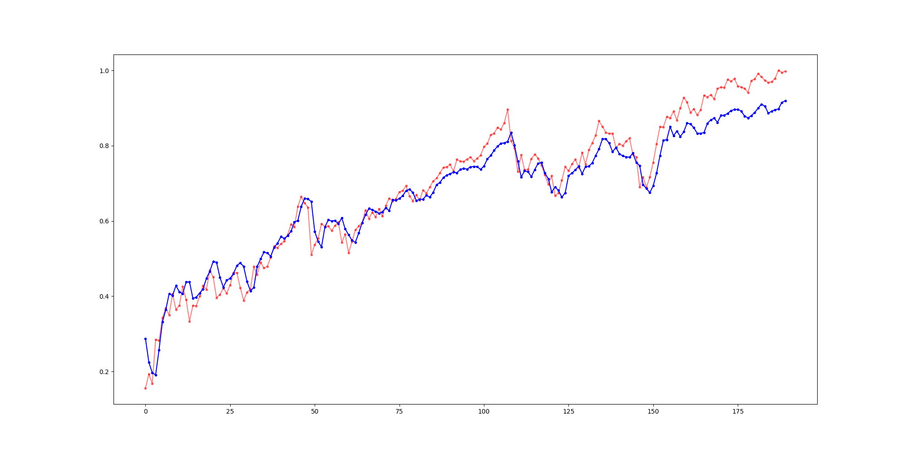
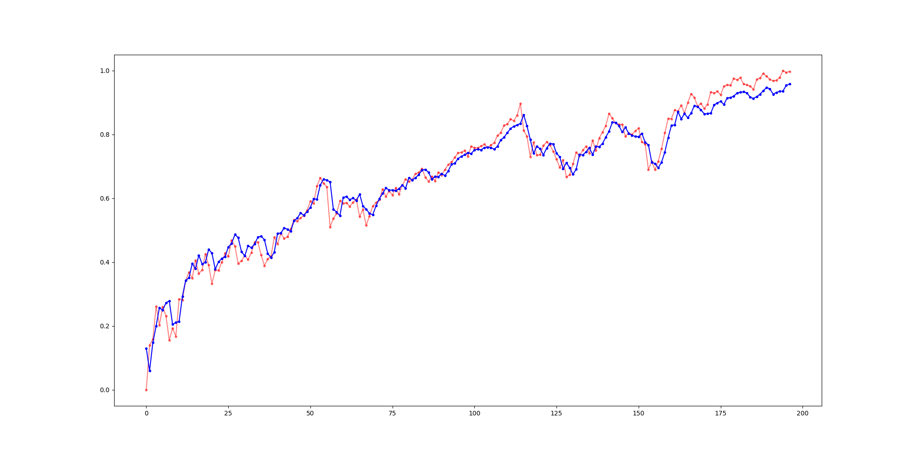
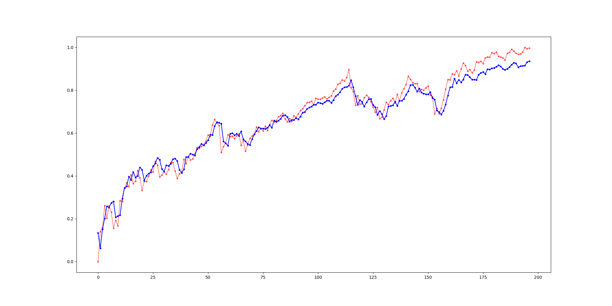
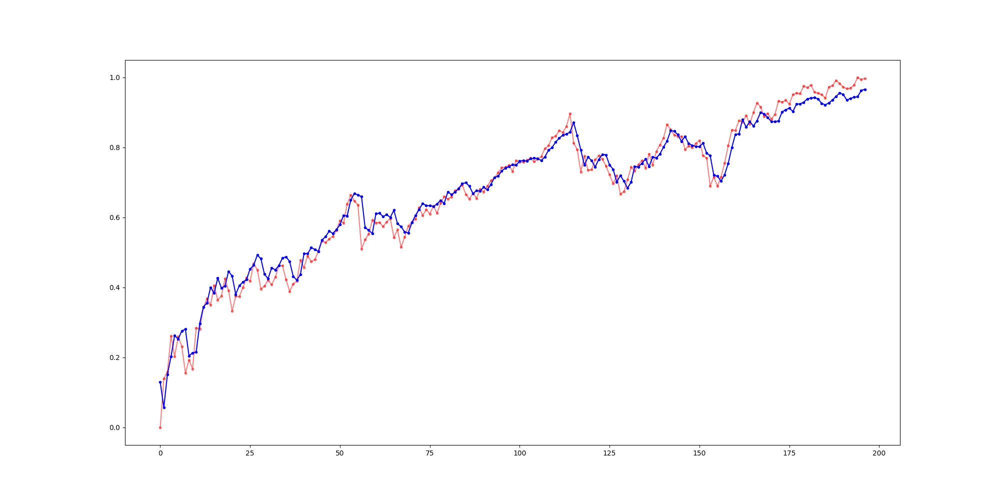
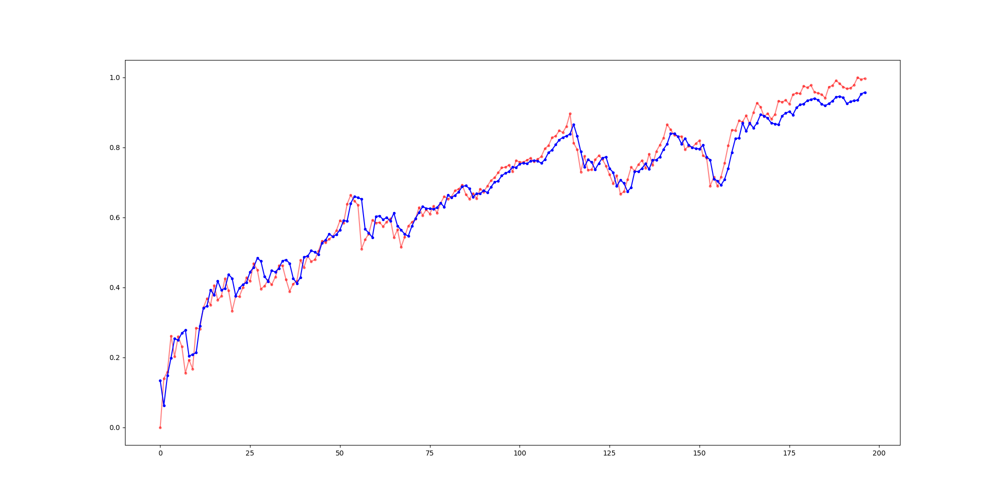

ברוך הבא לפרוייקט "שימוש ברשתות חברתיות לניבוי שוק ההון"
במחקר שלנו, בחרנו לבדוק האם קיים קשר בין ציוצים ברשת החברתית "טוויטר" של אנשי עולם בכירים, לבין השינויים המתרחשים במניות בבורסה העולמית. הסיבה שבגינה בחרנו לעסוק בתחום זה היא שבמידה ואכן נמצא כי יש קשר ישיר בין ציוצם של בכירי העולם בפלטפורמה זו, לבין שוק המניות, אזי שנוכל לבנות וליצור אלגוריתם אשר יהווה מודל לחיזוי וניבוי שוק המניות העתידי שיתבסס על סמך ציוצם של אישים משפיעים אלה.
במהלך המחקר, אנחנו מנסים להשתמש בנתוני הציוצים של אנשי עולם בכירים מרשת ה"טוויטר" אשר פורסמו בעבר על מנת לבדוק האם קיים קשר בין הציוצים הללו לבין התנודות והשינויים במניות בשוק ההון.
נשתמש במודל חיזוי המבוסס על נתוני העבר ונתוני הציוצים הקודמים מרשת הטוויטר של אנשי עולם בכירים כדי להבין ולחזות מה יקרה בעתיד ואילו עשויות להיות השינויים במניות ובמדדים מרכזיים בשוק ההון.
תוצאות
בעמוד זה ניתן לראות טבלה של כל התוצאות שקיבלנו

ללא סנטימנט
בתרשים הבא ניתן לראות את תוצאות החיזוי של המודל עם 8 ימי הסתכלות אחורנית כאשר מחיר המנייה האמיתי הוא באדום והמחיר שהמודל חוזה הוא בכחול.
ג'ו ביידן
בתרשים הבא ניתן לראות את תוצאות החיזוי של המודל עם סנטימנט של ג'ו ביידן כאשר מחיר המנייה האמיתי הוא באדום והמחיר שהמודל חוזה הוא בכחול.
ביל גייטס
בתרשים הבא ניתן לראות את תוצאות החיזוי של המודל עם סנטימנט של ביל גייטס כאשר מחיר המנייה האמיתי הוא באדום והמחיר שהמודל חוזה הוא בכחול.
ג'ף בזוס
בתרשים הבא ניתן לראות את תוצאות החיזוי של המודל עם סנטימנט של ג'ף בזוס כאשר מחיר המנייה האמיתי הוא באדום והמחיר שהמודל חוזה הוא בכחול.
אילון מאסק
בתרשים הבא ניתן לראות את תוצאות החיזוי של המודל עם סנטימנט של אילון מאסק כאשר מחיר המנייה האמיתי הוא באדום והמחיר שהמודל חוזה הוא בכחול.
טים קוק
בתרשים הבא ניתן לראות את תוצאות החיזוי של המודל עם סנטימנט של טים קוק כאשר מחיר המנייה האמיתי הוא באדום והמחיר שהמודל חוזה הוא בכחול.
דונלד טראמפ
בתרשים הבא ניתן לראות את תוצאות החיזוי של המודל עם סנטימנט של דונלד טראמפ כאשר מחיר המנייה האמיתי הוא באדום והמחיר שהמודל חוזה הוא בכחול.